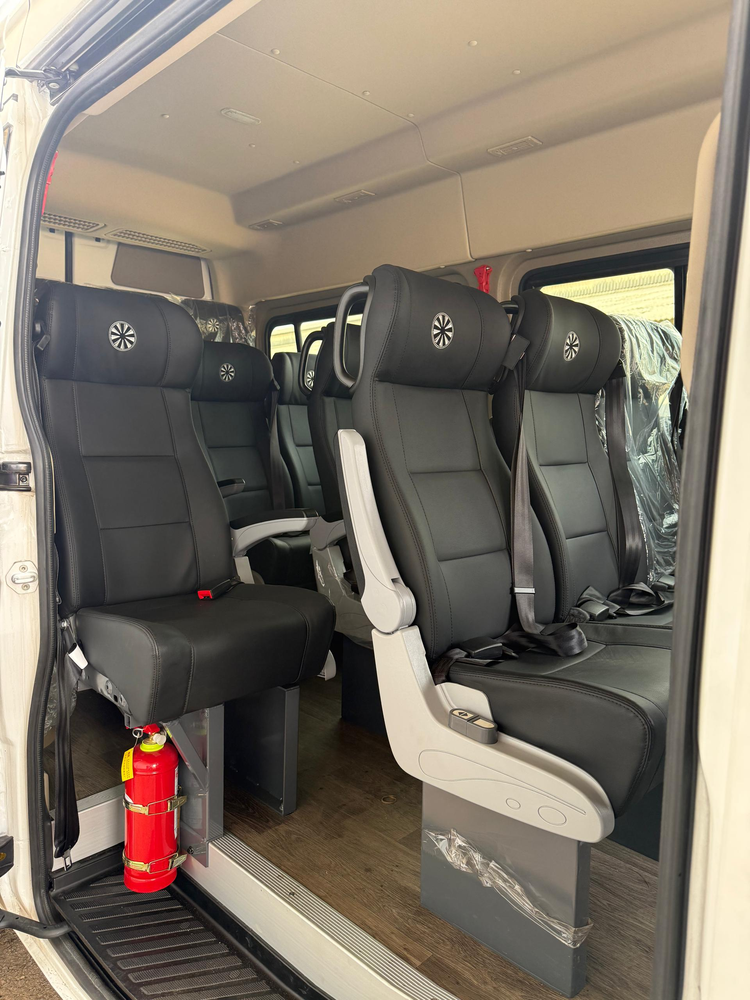
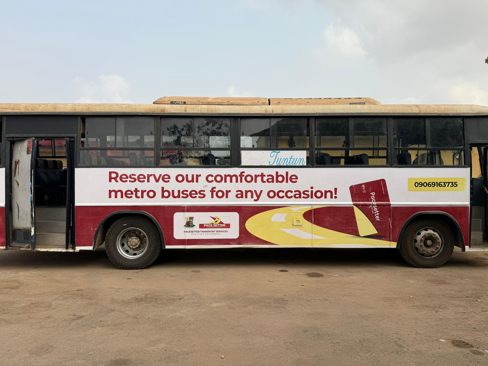
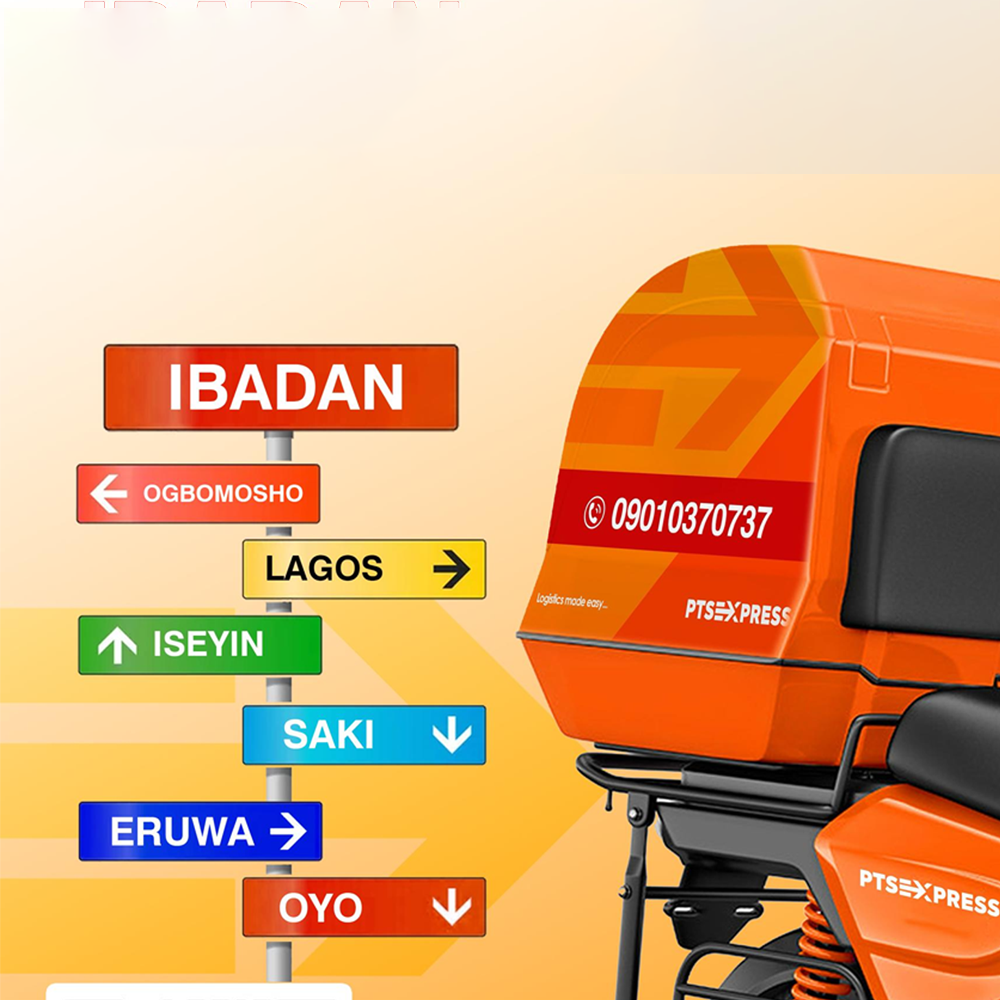

IntraCity and InterCity
Oyo State Transport Services offers dependable IntraCity and InterCity transportation for commuters looking to travel efficiently within and between cities in Oyo State. Our modern fleet and professional drivers ensure a comfortable and safe travel experience.We focus on convenience and reliability, providing well-timed services that meet the daily commuting needs of individuals, students, and workers. Whether it’s a quick trip across the city or a journey to neighboring towns, our services are designed to keep you moving seamlessly.

Inter State
Our InterState services connect Oyo State with other regions across Nigeria, providing long-distance travelers with safe, affordable, and comfortable transportation options. We prioritize passenger satisfaction by maintaining a modern fleet equipped for long journeys.Whether traveling for business or leisure, our well-planned routes and dedicated staff ensure a stress-free experience, making us your trusted partner for InterState travel.

Hire Service
For personalized transportation needs, Oyo State Transport Services offers flexible hire services. Whether you’re planning a family outing, corporate trip, or special event, our vehicles are available to cater to your requirements.Our hire service is designed for convenience, allowing you to choose the vehicle and schedule that best suits your plans. With professional drivers and well-maintained vehicles, we ensure a smooth and enjoyable journey every time.

Branding
Leverage our high-visibility branding services to showcase your business on our vehicles. With routes that cover various cities and states, your brand gains maximum exposure to a wide and diverse audience.Our branding solutions are cost-effective and impactful, helping businesses connect with potential customers daily. Let us help you drive your message further.

Logistics
Efficient and reliable, our logistics services handle goods transportation for individuals and businesses. We ensure secure delivery across Oyo State and beyond, with an emphasis on timeliness and professionalism.From small parcels to larger shipments, our team is equipped to manage your logistics needs with care and precision. Trust PTS EXPRESS for solutions that move your goods seamlessly.